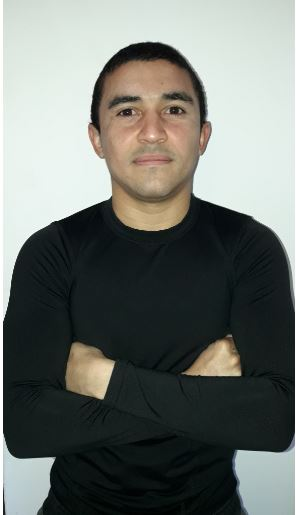

Desarrollador Web Junior
Francisco Tovar
Soy un desarrollador web trainee especializado en Javascript, usando Node.js como tecnologías de backend
y React.js como tecnologías de frontend. Durante los últimos dos años me he dedicado a aprender la mayor
cantidad de conceptos sobre la programación web, enfocado en mi crecimiento personal y profesional.
Actualmente deseo seguir adquiriendo conocimientos de programación en un ambiente laboral en el cual el
reto a mejorar sea frecuente.
EDUCACIÓN Y CERTIFICACIONES
Licenciatura en Física
Universidad Central de Venezuela
OCTUBRE DE 2008 - DICIEMBRE DE 2015
Licenciatura en física
Certificado en Desarrollo Web
Freecodecamp.org
MAYO DE 2019 - SEPTIEMBRE DE 2020
Planificación, desarrollo y entrega de aplicaciones web frontend y backend basada en historias de usuarios.
Manipulación y Visualización de datos JSON para aplicaciones web.
Especialización Python for Everybody
Universidad de Michigan- Coursera
JULIO DE 2020 - SEPTIEMBRE DE 2020
Especialización en lenguaje de programación python, manejo de tipos de datos, manejo de archivos, análisis y visualización de datos.
QA Tester
Universidad Técnica Nacional - e-Learning Total
FEBRERO DE 2020 - ABRIL DE 2020
Detección de requerimientos a partir de documentación, posterior diseño de plan de pruebas, obtener casos de prueba y reporte de defectos en aplicaciones.
Experiencias Laborales
Técnico Eléctro-mecánico
MyG Autoelevadores
OCTUBRE DE 2016 - DICIEMBRE DE 2020
Desarrollo de proyecto de electronica programable en lenguaje Arduino
Skills
LENGUAJES DE PROGRAMACIÓN
- Javascript
- Python
- HTML
- CSS
- Arduino
FRAMEWORKS Y BIBLIOTECAS
- Express.js
- Node.js
- React.js
- Bootstrap
- JQuery
Por qué Henry?
Siempre he tenido una fuerte atracción he interes por la programación, al punto en que se convirtió
en una de mis principales pasiones, los últimos dos años los he invertido en aprender programción web
de manera autodidacta alcanzado cierto nivel, aunque no suficiente para mi, hace algunos meses he querido
complementar mis estudios con algún bootcamp o proyecto a largo plazo que me brinde la oportunidad de
adquirir experiencia. Es así como dí con henry, principalmente debo decir que me enteré de Henry por un
amigo que es programador web,
luego de esto indagué un poco ya que me gustó en primer lugar el método de pago, fue lo primero
que verifiqué en la pagina de henry en la sección de preguntas comúnes, luego el horario, cada vez
me fuí convenciendo más, aunque lo que llegó a a convercerme definitivamente es el plan de estudios
y que en cierto tiempo se comenzará a trabajar en proyectos de empresas, ya que esto brinda un
excelente entrenamiento para el programador.